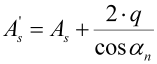

|
|
|


预加工和磨削余量
齿轮通常先以磨削余量进行预加工，然后淬硬，最后磨削。磨削过程通常涉及齿面，但不涉及齿根。
注意：如果选择刀具、插齿刀或构造渐开线作为预加工刀具，则预加工的齿轮参考齿廓将根据刀具数据在内部计算。
在这种情况下，齿根圆由预加工刀具形成，齿面由磨削工艺形成。为正确完成此过程，请选择（使用自定义输入，或使用磨削余量 III 或 IV（按 DIN 3972 规定）的参考齿廓），或选择。如果决定使用预加工，则会显示字段。您还可以将自己的公差添加到数据库中。输入预加工刀具的齿廓（例外：haP *）作为参考齿廓。对于齿厚偏差（公差），输入成品轮齿的齿厚余量（As）。在 KISSsoft 中，磨削余量是针对成品轮齿计算的。然后使用以下齿厚余量执行预加工：

对于特殊要求，请在窗口中点击加号按钮以增大公差。如果为 qmax-qmin 输入一个值，则使用 qmax = q+(qmax-qmin)/2 和 qmin = q-(qmax-qmin)/2 来定义预加工余量。
公差区间 qmax-qmin 被限制为以下值中的较小者：200% 的齿厚公差区间（As.e-As.i）、30%，或磨削余量（q）。
KISSsoft 随后确定与成品齿形相对应的参考齿廓。该齿形还将用于计算齿根强度的系数 YF 和 YS。然后通过将预加工轮廓与后续磨削工艺叠加，自动定义齿形。齿根圆直径由预加工参考齿廓导出。同时计算并打印输出预加工轮齿和成品轮齿的控制数据（如公法线长度）。
重要例外
齿顶高系数 h aP* 是用于计算理论齿顶圆直径系数的理论齿顶高系数。报告中会输出滚刀适当的最小齿根高度 h*fP0，这是在无切顶情况下形成齿形所需的。h aP* 始终作为齿轮的精加工参考齿廓。参考线上的齿厚为 π/2*mn。
Pre-machining and grinding allowance
Often gears are premachined with a grinding allowance, then hardened and then ground. The tooth flank, but not the tooth root, is usually involved in the grinding process.
Note: If a cutter, pinion type cutter or constructed involute is selected as the pre-machining tool, the gear reference profile for pre-machining is calculated internally from the tool data.
In this case, the root circle is created by the pre-machining cutter and the flank by the grinding process. To complete this process correctly, select either (with own input, or with reference profile for grinding allowance III or IV as specified in DIN 3972) or select . If you decide to use pre-machining, the field is displayed. You can also add your own tolerances to the database. Enter the pre-machining tool's profile (exception: haP *) as the reference profile. For the tooth thickness deviations (tolerances), enter the tooth thickness allowance for the finished gear teeth (As). In KISSsoft, the grinding allowance is calculated for the finished toothing. The pre-machining is then performed using the following tooth thickness allowance:
For special requirements, click on the Plus button in the window, to increase the tolerance. If a value is input for qmax-qmin, then qmax = q+(qmax-qmin)/2 and qmin = q-(qmax-qmin)/2 are used to define the pre-machining allowances.
The tolerance interval qmax-qmin is limited to the smaller value of either 200% of the tooth thickness tolerance interval (As.e-As.i), or 30%, or the grinding allowance (q).
KISSsoft then determines the reference profile that corresponds to the finished tooth form. This tooth form will also be used to calculate the factors YF and YS for the tooth root strength. The tooth form is then defined automatically by overlaying the pre-machining contour with the subsequent grinding process. The root diameters are derived from the reference profile for pre-machining. The control data (e.g. base tangent length) is calculated and printed out for both the premachined and the finished gear teeth.
Important exception
The addendum coefficient h aP* is the theoretical addendum coefficient that is used to calculate the theoretical tip diameter coefficient. The appropriate minimum root height of the hobbing cutter h*fP0, which is required to create the tooth form without topping, is output in the report. h aP* always applies as the final machining reference profile for the gears. The tooth thickness on the reference line is π/2*mn.